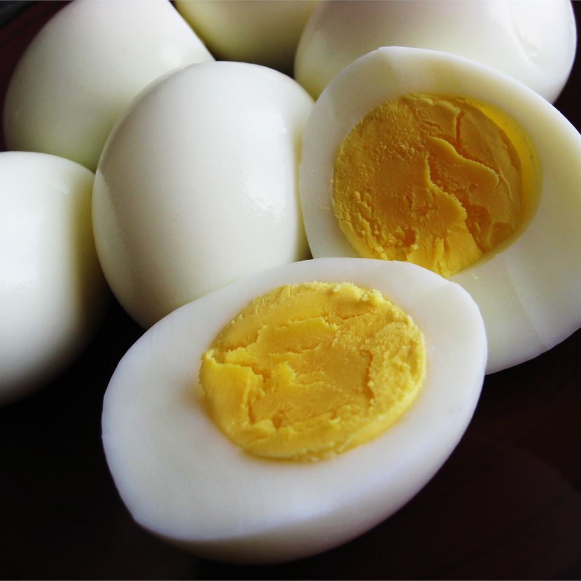

Perfect Boiled Eggs
Perfect Hard Boiled Eggs

How To Make PERFECT Hard Boiled Eggs Every Time
Couldn't sleep one night so I researched several ways to hard boil eggs and developed this process.
While you do not taste the vinegar or salt, they both pull the skin from the eggshell
so it peels easily without tearing or sticking. Enjoy!
Ingredients
- 1 tablespoon salt
- ¼ cup distilled white vinegar
- 6 cups water
- 8 eggs
Instructions
- Combine the salt, vinegar, and water in a large pot, and bring to a boil over high heat.
Add the eggs one at a time, being careful not to crack them.
Reduce the heat to a gentle boil, and cook for 14 minutes.
- Once the eggs have cooked, remove them from the hot water, and place into a container of ice water or cold,
running water. Cool completely, about 15 minutes. Store in the refrigerator up to 1 week.